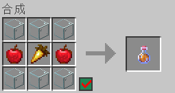
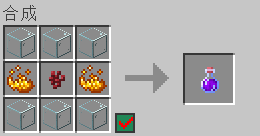

这是一个Bukkit插件，需要安装在Spigot及其下游分支的服务端内才能运行
对于个人玩家，我们更推荐你去看看Unicopia
测试过的版本：1.20.1、1.21.1
理论兼容版本：1.16.x-1.21.x
下载链接（更新可能不及时）：点我
这是EQAD Network开发的插件
可以让玩家在游戏内扮演MLP种族
目前插件共包含8个种族 （除了幻形灵，因为我不会做）
分别是飞马、陆马、独角兽、夜琪、海马、麒麟、龙、人类（人类是凑数的）
每个种族都有单独的技能、数值和饮食习惯
名称：转生药水，效果：让玩家更换种族

名称：体力药水，效果：瞬间回满体力值
名称：魔力药水，效果：瞬间回满魔力值
| 变量 | 描述 |
|---|---|
%ponyrace_race% |
返回玩家种族 |
%ponyrace_stamina% |
返回玩家体力值 |
%ponyrace_mana% |
返回玩家魔力值 |
%ponyrace_enrage_time% |
返回玩家发怒值 |
| 命令 | 描述 |
|---|---|
/pr set <种族> [玩家] |
设置种族 |
/pr info [玩家] |
查看种族信息 |
/pr reload |
重载配置文件 |
/pr gui |
打开种族选择菜单 |
/pr about |
关于PonyRace |
| 权限 | 描述 |
|---|---|
ponyrace.admin |
允许使用管理员指令 |
1.5.1版本
# PonyRace配置文件
# 若无特殊标注，配置文件内所有数值皆需填入正整数
messages:
# 插件消息前缀
prefix: "&8[&bPonyRace&8]&r "
settings:
selection:
# 是否在无种族玩家加入时显示种族选择菜单
show: true
# 是否使用效率更低的方式来兼容登录插件
# 如果种族选择窗口被登录插件卡没，请启用此选项
# 该选项启用后会覆盖“强制无种族玩家选择种族”选项
login-plugin-support: false
# 是否强制无种族玩家选择种族
force: true
consume:
# 左键技能魔力消耗量
mana-left: 20
# 右键技能魔力消耗量
mana-right: 50
# 飞行时每秒体力消耗量
stamina: 1
# 冲刺技能体力消耗量
stamina-boost: 20
# 玩家飞行速度超过阈值后每增加1速度所额外消耗的体力（可小数）
stamina-move: 0.5
# 最大额外消耗体力
stamina-move-max: 3
# 飞行速度阈值（方块/秒）
stamina-move-threshold: 8
# 发怒时每0.25秒怒气消耗量
enrage: 3
regen:
# 每秒魔力恢复量
mana: 1
# 每秒体力恢复量
stamina: 2
# 每0.25秒怒气恢复量
enrage: 1
cooldown:
# 魔法技能冷却（秒）
mana: 1
# 冲刺技能冷却（秒）
boost: 1
# 吃食物/宝石冷却，不影响原版食物食用速度（秒）
eat: 1
# 龙族火球技能冷却（秒）
dragon-fire: 30
# 在体力耗尽后需要恢复到多少体力才能继续飞行
fly: 20
# 发怒所需要的最低怒气值
enrage: 20
友情外链
马国记忆 · 小马社区 · 羽梦千景 · Pudding
Copyright © Equestriarcadia | 苏ICP备2025189220号
Friendship is magic, 友谊是魔法, 千景是甜贝儿，甜贝儿是千景, 红温了, 《你们管理怎么都那么容易红温》, 都是开创造拿的.jpg, 最新消息：科学家发现，吃饭可以缓解饥饿, 原神，____, 笨蛋, 命令 /co i 可以查熊哦, Can't keep up!